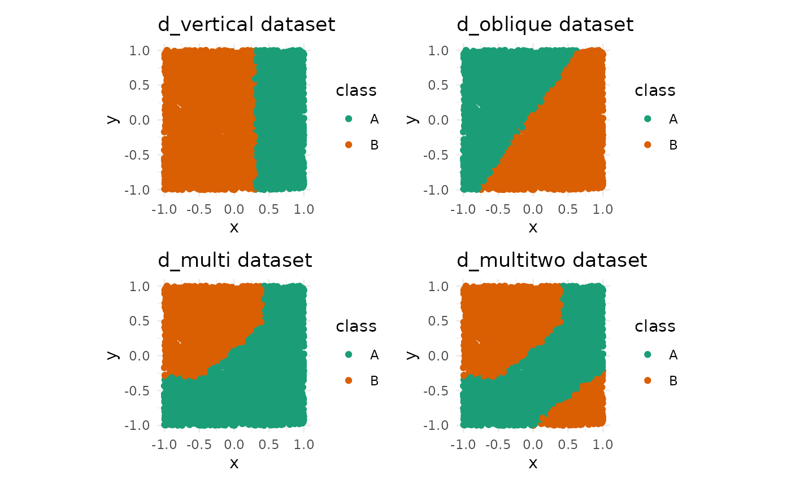

Simple unit tests with in built-in datasets
data-examples.Rmd
library(kumquat)
if(!requireNamespace("tidyverse")) {
install.packages("tidyverse")
}
#> Loading required namespace: tidyverse
if(!requireNamespace("RColorBrewer")) {
install.packages("RColorBrewer")
}
if(!requireNamespace("colorspace")) {
install.packages("colorspace")
}
#> Loading required namespace: colorspace
if(!requireNamespace("patchwork")) {
install.packages("patchwork")
}
#> Loading required namespace: patchwork
if(!requireNamespace("randomForest")) {
install.packages("randomForest")
}
#> Loading required namespace: randomForest
library(tidyverse)
#> ── Attaching core tidyverse packages ──────────────────────── tidyverse 2.0.0 ──
#> ✔ dplyr 1.2.1 ✔ readr 2.2.0
#> ✔ forcats 1.0.1 ✔ stringr 1.6.0
#> ✔ ggplot2 4.0.3 ✔ tibble 3.3.1
#> ✔ lubridate 1.9.5 ✔ tidyr 1.3.2
#> ✔ purrr 1.2.2
#> ── Conflicts ────────────────────────────────────────── tidyverse_conflicts() ──
#> ✖ dplyr::filter() masks stats::filter()
#> ✖ dplyr::lag() masks stats::lag()
#> ℹ Use the conflicted package (<http://conflicted.r-lib.org/>) to force all conflicts to become errors
library(RColorBrewer)
library(colorspace)
library(patchwork)
library(randomForest)
#> randomForest 4.7-1.2
#> Type rfNews() to see new features/changes/bug fixes.
#>
#> Attaching package: 'randomForest'
#>
#> The following object is masked from 'package:dplyr':
#>
#> combine
#>
#> The following object is masked from 'package:ggplot2':
#>
#> marginThere are four sample datasets in the package, with varying complexities in the decision boundary.
The datasets are as follows.
- d_vertical
- d_oblique
- d_multi
- d_multitwo
All of these datasets are made for a binary classification task. Each
dataset contains two numeric variables (x, y)
and one categorical variable (class). In this section, we
will visualize the datasets along with their decision boundary.
(d_vert_plot + d_obl_plot) / (d_multi_plot + d_multitwo_plot)
Testing kumquat with the given datasets
Models
#> INFO [2026-06-04 03:13:27] Picking kumquats for row: 3090
# we expect the absolute importance of x to be greater for y
pinch_importance(ks)
#> x y
#> 1 -77.52714 54.32359